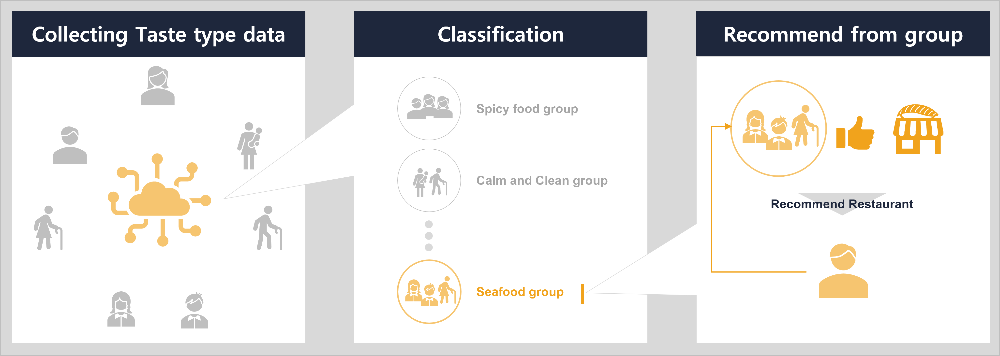
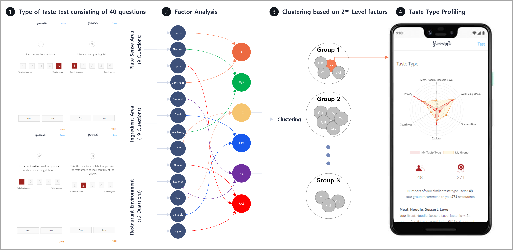
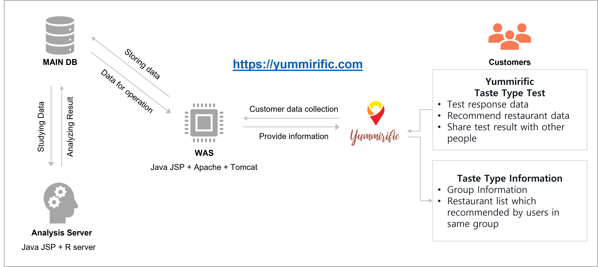

Yummirific
Small Data Based Restaurant Recommendation Service
Designed and developed a restaurant recommendation service based on taste preferences and taste typing test analysis. Prototype service attracted more than 6,000 users worldwide, allowing identification of customers with similar tastes.
The problem of existing restaurant recommendation system
1. Impossibility of personal taste reflection
- Recommendation method based only on its own information from restaurants.
- The assumption that all customer’s characteristics are universal and identical.
- Each customers‘ taste type, however, has a lot of diversity and there are so many factors that affect the preference of food selection.
- Most services are focused on the internet's big data of restaurant information instead of analyzing customer’s taste types.
2. Social conflict occurrence caused by services
- Harmful cases arose in Korea, caused by malicious reviews or comments.
- Abnormal services occurred in Korea which are fabricating and deleting reviews.
- Because of deletion reviews, social conflict cases have arisen between customers and restaurant owners.
3. Limitation of NLP
- Natural language processing is not an effective tool for analyzing customer reviews to suit customer’s intentions.
- Currently the natural language processing technology of most restaurant recommendation services is only at the level of keyword extraction.
How to solve problems?
Using Small Data : Personal Taste Data

- Collecting and observing each customer’s taste data.
- Collecting each customer's taste data using a test like MBTI.
- Estimate customer’s latent factors that affect each customer's taste type and selection of restaurants with collected data.
- Using statistic models to classify people with similar tastes.
- You can get recommendations for restaurants by groups of users who have similar tastes.
Key technology of Yummirific

- Taste Typology Test and Personalized Recommendations: Developed a taste typology test using structural equation modeling for customer categorization into six indicators. Utilized the taste typology test to drive targeted marketing strategies and provide personalized restaurant recommendations.
- Machine Learning Model for Customer Classification: Implemented a machine learning model for accurate classification of customer groups with similar tastes. Leveraged the machine learning model to enable targeted marketing strategies and customized recommendations.
Functions and structures of Prototype Service : Yummirific

Yummirific Prototype Service introduction